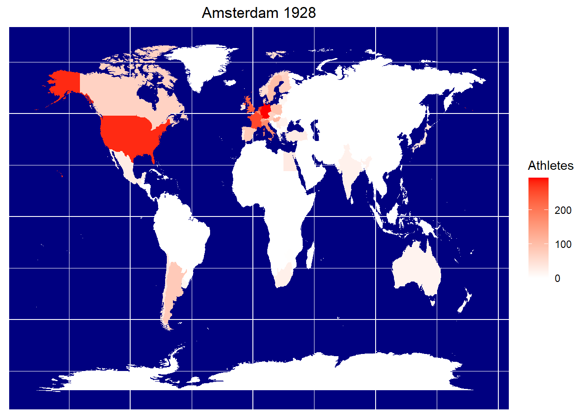
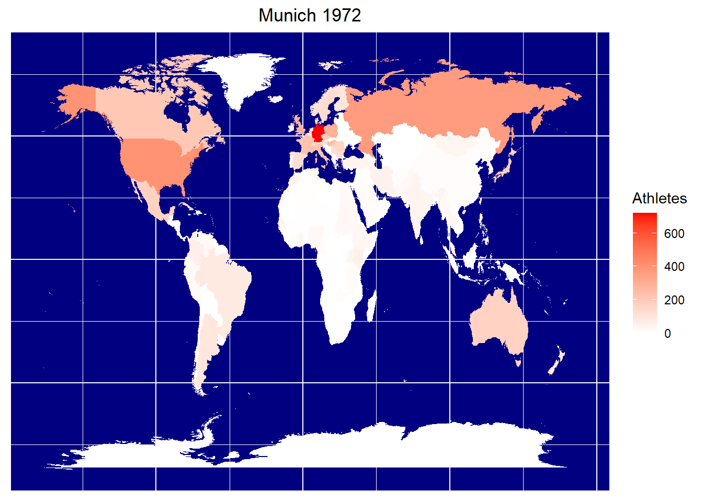
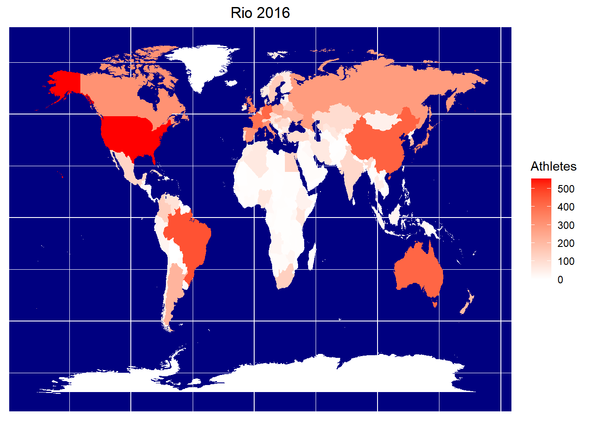

2 Olympic history
2.1 介绍
本项目的主要目标是阐明奥运会历史的主要模式，例如运动员、运动、参与国家的数量，哪些国家的运动员最多，赢得奖牌情况，运动员的特性（eg：性别、身体特征等）。
我将一些你可能不知道的奥运历史上特别有趣的方面进行放大化。你知道纳粹德国举办了1936年奥运会，而那届奥运会他们打败了所有人？你知道绘画和诗歌曾经是奥运会项目吗？这些历史小花絮同样是我的关注点。
首先，我们读取数据，并对每列的数据类型进行定义。
file<- "D:/Tools/Rwork/0.Study R/kaggle-project/data/olympics/athlete_events.csv"
data <- read_csv(file,
col_types = cols(
ID = col_character(),
Name = col_character(),
Sex = col_factor(levels = c("M","F")),
Age = col_integer(),
Height = col_double(),
Weight = col_double(),
Team = col_character(),
NOC = col_character(),
Games = col_character(),
Year = col_integer(),
Season = col_factor(levels =
c("Summer","Winter")),
City = col_character(),
Sport = col_character(),
Event = col_character(),
Medal = col_factor(levels =
c("Gold","Silver","Bronze"))
))
head(data)## # A tibble: 6 x 15
## ID Name Sex Age Height Weight Team NOC Games Year Season City
## <chr> <chr> <fct> <int> <dbl> <dbl> <chr> <chr> <chr> <int> <fct> <chr>
## 1 1 A Diji~ M 24 180 80 China CHN 1992 ~ 1992 Summer Barc~
## 2 2 A Lamu~ M 23 170 60 China CHN 2012 ~ 2012 Summer Lond~
## 3 3 Gunnar~ M 24 NA NA Denma~ DEN 1920 ~ 1920 Summer Antw~
## 4 4 Edgar ~ M 34 NA NA Denma~ DEN 1900 ~ 1900 Summer Paris
## 5 5 Christ~ F 21 185 82 Nethe~ NED 1988 ~ 1988 Winter Calg~
## 6 5 Christ~ F 21 185 82 Nethe~ NED 1988 ~ 1988 Winter Calg~
## # ... with 3 more variables: Sport <chr>, Event <chr>, Medal <fct>2.2 运动员、国家和时间
2.2.1 随着时间的推移，运动员、国家和赛事的数量是否发生了变化？
counts <- data %>%
filter(Sport != "Art Competitions") %>% # 去掉艺术类的运动类别
group_by(Year, Season) %>%
summarize(
Athletes = length(unique(ID)),
Nations = length(unique(NOC)),
Events = length(unique(Event))
)
counts## # A tibble: 51 x 5
## # Groups: Year [35]
## Year Season Athletes Nations Events
## <int> <fct> <int> <int> <int>
## 1 1896 Summer 176 12 43
## 2 1900 Summer 1224 31 90
## 3 1904 Summer 650 15 95
## 4 1906 Summer 841 21 74
## 5 1908 Summer 2024 22 109
## 6 1912 Summer 2377 27 102
## 7 1920 Summer 2665 29 153
## 8 1924 Summer 3067 44 126
## 9 1924 Winter 313 19 17
## 10 1928 Summer 2877 46 109
## # ... with 41 more rows# 作图
# 运动员数量及关键时间点
p1 <- ggplot(counts, aes(x = Year, y = Athletes,
group = Season, color = Season)) +
geom_point(size = 2) +
geom_line() +
scale_color_manual(values = c("darkorange", "darkblue")) + # 手动设置图形颜色
xlab(" ") +
annotate("text", x = c(1932, 1956, 1976, 1980),
y = c(2000, 2750, 6800, 4700),
label = c(
"L.A. 1932",
"Melbourne 1956",
"Montreal 1976",
"Moscow 1980"),
size=3) + # 对几个临界拐点进行标记。
# 针对两次世界大战的时间做出标记
annotate("text", x = c(1916,1942), y = c(10000,10000),
label = c("WWI", "WWII"),
size = 4, color = "red") +
geom_segment(aes(x = 1914, y = 8000, xend = 1918, yend = 8000),
color = "red", size = 2) +
geom_segment(aes(x = 1939,y = 8000, xend = 1945, yend = 8000),
color = "red", size=2) +
scale_x_continuous(breaks = seq(1890, 2020, 4)) +
scale_y_continuous(breaks = seq(0, 15000, 5000)) +
theme_bw() +
theme(axis.text.x = element_text(size = 10, angle = 90, vjust = 0.4, face = "bold"))
# 参与国家数量及关键时间点
p2 <- ggplot(counts, aes(x = Year, y = Nations,
group = Season, color = Season)) +
geom_point(size = 2) +
geom_line() +
scale_color_manual(values = c("darkorange", "darkblue")) +
xlab("") +
annotate("text", x = c(1932, 1976, 1980),
y = c(60, 105, 70),
label = c("L.A. 1932",
"Montreal 1976",
"Moscow 1980")) +
scale_x_continuous(breaks = seq(1890, 2020, 4)) +
scale_y_continuous(breaks = seq(0, 250, 50)) +
theme_bw() +
theme(axis.text.x = element_text(size = 10, angle = 90, vjust = 0.4, face = "bold"))
# 参赛项目
p3 <- ggplot(counts, aes(x = Year, y = Events, group = Season, color = Season)) +
geom_point(size = 2) +
geom_line() +
scale_color_manual(values = c("darkorange", "darkblue")) +
scale_x_continuous(breaks = seq(1890, 2020, 4)) +
scale_y_continuous(breaks = seq(0, 350, 50)) +
theme_bw() +
theme(axis.text.x = element_text(size = 10, angle = 90, vjust = 0.4, face = "bold"))
grid.arrange(p1, p2, p3, ncol = 1)图2.1: 随着时间的推移，运动员、国家和赛事的数量的变化情况
从图2.1 可以看出两次世界大战期间，奥运会基本处于停滞状态（WWI:1912-1920，WWII:1936-1948）。此外，有几届值得注意的奥运会上发生了一些事件，在图形中呈现为明显的下降趋势：
L.A., 1932: 1932年洛杉矶奥运会，当时的美国正处于大萧条期间，许多运动员没办法负担到奥运会的差旅费用，导致参加本届奥运会的国家机器运动员数量骤降。
Melbourne, 1956：1956年墨尔本奥运会是事端最多的一届奥运会：1、由于战争立场不同，包括埃及、以色列、伊拉克和黎巴嫩在内的一些中东及非洲国家，西班牙、荷兰、瑞士、哥伦比亚等欧洲国家均抵制本届奥运会；2.由于台湾问题，我国也未参加本届奥运会。
Montreal, 1976：1976年蒙特利尔奥运会，由于发生了抵制运动，25个国家（大部分为非洲国家）未参加本届奥运会。
Moscow, 1980：1980年莫斯科奥运会，由于苏联军队对阿富汗的入侵，包括美国在内的66个国家对本届奥运会进行了抵制，本届奥运会最终仅有80个国家参加，是自1956年以来最少国家参加的一届，而许多参赛的国家也只派一名旗手，以奥运会会旗代替国旗进场。这是奥运历史上最严重的一次危机，从一定程度上威胁了奥林匹克运动的发展。
从2000年开始，奥运会的增长势头（比赛项目额参赛运动员数量）趋于平缓，夏季奥运会迎来了它的饱和点。而冬季奥运会处于虽然还有一定上升空间，但冰雪运动受限于气候和场地，在很多国家并不普吉，所以其涨势并不明显。
2.3 艺术竞赛（The Art Competitions）
2.3.1 运动员、时间、参赛项目
art <- data %>%
filter(Sport == "Art Competitions") %>%
select(Name, Sex, Age, Team, NOC, Year, City, Event, Medal)
head(art)## # A tibble: 6 x 9
## Name Sex Age Team NOC Year City Event Medal
## <chr> <fct> <int> <chr> <chr> <int> <chr> <chr> <fct>
## 1 Win Valdemar Aaltonen M 54 Finland FIN 1948 London Art C~ <NA>
## 2 Adolf Gaston Abel M 45 Germany GER 1928 Amsterdam Art C~ <NA>
## 3 Adolf Gaston Abel M 45 Germany GER 1928 Amsterdam Art C~ <NA>
## 4 Georges Achille-Fould F 55 France FRA 1924 Paris Art C~ <NA>
## 5 Dsir Antoine Acket M 27 Belgium BEL 1932 Los Angeles Art C~ <NA>
## 6 Dsir Antoine Acket M 27 Belgium BEL 1932 Los Angeles Art C~ <NA># 基础计算
count_art <- art %>%
group_by(Year) %>%
summarize(
Events = length(unique(Event)),
Nations = length(unique(Team)),
Artists = length(unique(Name))
)
head(count_art)## # A tibble: 6 x 4
## Year Events Nations Artists
## <int> <int> <int> <int>
## 1 1912 5 12 33
## 2 1920 5 5 11
## 3 1924 5 24 189
## 4 1928 13 19 370
## 5 1932 13 36 588
## 6 1936 19 24 527在最初的奥运会中，还存在艺术竞赛（Art Competition）项目的比拼，准确的说从1912年至1948年间的几届奥运会。
1954年，国际奥委会决定艺术竞赛不再作为奥运会的比赛项目。
虽然艺术竞赛的数据仅占本数据集的1.3%，但考虑到其在奥运会理事上的特殊意义，仍有必要对其进行探索分析。
# 提取有关艺术竞赛的数据
art <- data %>%
filter(Sport == "Art Competitions") %>%
select(Name, Sex, Age, Team, NOC, Year, City, Event, Medal)
# 计算每年的Events, Nations, Artists数量
counts_art <- art %>%
filter(Team != "Unknow") %>% # 剔除国籍不确定的运动员
group_by(Year) %>%
summarize(
Events = length(unique(Event)),
Nations = length(unique(Team)),
Artisit = length(unique(Name))
)p4 <- ggplot(counts_art, aes(x = Year, y = Events)) +
geom_point(size = 2) +
geom_line() +
xlab(" ") +
scale_x_continuous(breaks = seq(min(counts_art["Year"]), max(counts_art["Year"]), 4)) +
scale_y_continuous(breaks = seq(0, 20, 2)) +
theme_bw() +
theme(axis.text.x = element_text(size = 10, vjust = 0.4, face = "bold"))
p5 <- ggplot(counts_art, aes(x = Year, y = Nations)) +
geom_point(size = 2) +
geom_line() +
xlab(" ") +
scale_x_continuous(breaks = seq(min(counts_art["Year"]), max(counts_art["Year"]), 4)) +
scale_y_continuous(breaks = seq(0, 40, 5)) +
theme_bw() +
theme(axis.text.x = element_text(size = 10, vjust = 0.4, face = "bold"))
p6 <- ggplot(counts_art, aes(x = Year, y = Artisit)) +
geom_point(size = 2) +
geom_line() +
xlab(" ") +
scale_x_continuous(breaks = seq(min(counts_art["Year"]), max(counts_art["Year"]), 4)) +
scale_y_continuous(breaks = seq(0, 600, 100)) +
theme_bw() +
theme(axis.text.x = element_text(size = 10, vjust = 0.4, face = "bold"))
grid.arrange(p4, p5, p6, ncol = 1)图2.2: 历届奥运会艺术竞赛随时间变化图（参与国家、参赛运动员、比赛项目）
如图2.2所示，艺术竞赛的数据变化呈不规则的增长趋势。可以看到，与1920年相比，1924年奥运会参与艺术竞赛的国家和运动员数量均有相对较大幅度的增长，这或许是1928年奥运会艺术竞赛比赛项目增多的一个原因。
2.3.2 获得奖牌情况-哪个国家获得的艺术竞赛类奖牌数量最多
# 计算每个国家所获奖牌数量
medal_counts_arts <- art %>%
filter(!is.na(Medal)) %>%
group_by(Team, Medal) %>%
summarize(Count = length(Medal))
# 根据奖牌数量对国家进行排序
levs_art <- medal_counts_arts %>%
group_by(Team) %>%
summarize(Total = sum(Count)) %>%
arrange(Total) %>%
select(Team)
medal_counts_arts$Team <- factor(medal_counts_arts$Team, levels = levs_art$Team)ggplot(medal_counts_arts, aes(x = Team, y = Count, fill = Medal)) +
geom_col() +
coord_flip() +
scale_y_continuous(breaks = seq(0, 30, 5)) +
scale_fill_manual(values = c("gold1", "gray70", "gold4")) +
ggtitle("艺术竞赛奖牌榜") +
theme(plot.title = element_text(hjust = 0.5))图2.3: 各国艺术竞赛奖牌榜
art_country <- nrow(unique(art["Team"]))
art_country_medal <- nrow(medal_counts_arts %>%
summarize(country = length(unique(Team)))
)共有51个国家参加了奥运会的艺术竞赛类项目，仅有不到一半数量的国家（23）获得了奖牌（如图2.3所示），排名前三位的为德国、法国、意大利。
2.4 奥林匹克中的女将们
现代奥林匹克之父顾拜旦曾今极力反对女性参加奥运会。其后的IOC主席也同样支持这个观点。尽管有多方面的阻力，从第一届奥运会（1896年）开始的每届奥运会均有女性参与其中。所以我们在这里探索一下女性参加奥运会的历史趋势：多少人？从哪里来？她们如何找到途经参加的？
本部分中，对数据集进行如下处理：
将第@sec:art-com节中讨论过的艺术竞赛数据剔除。
将夏季和冬季奥运会合并为“Olympiads”列，即每四年期内包括一届夏季奥运会和一届冬季奥运会。
让我们开始！
2.4.1 男女运动员数量比较
# 剔除艺术竞赛项目数据
data <- data %>%
filter(Sport != "Art Competition")
# 对Year列数据重新编码（1992年之后，与夏季奥运会匹配）
# 处理后，冬季和夏季奥运会举办时间的已匹配
original <- c(1994, 1998, 2002, 2006, 2010, 2014)
new <- c(1996, 2000, 2004, 2008, 2012, 2016)
for (i in 1:length(original)) {
data$Year <- gsub(original[i], new[i], data$Year)
}
data$Year <- as.integer(data$Year)
counts_sex <- data %>%
group_by(Year, Sex) %>%
summarize(Athletes = length(unique(ID)))
counts_sex$Year <- as.integer(counts_sex$Year)ggplot(counts_sex, aes(x = Year, y = Athletes, group = Sex, color = Sex)) +
geom_point(size = 2) +
geom_line() +
scale_color_manual(values = c("darkblue", "red")) +
scale_x_continuous(breaks = seq(1896, 2016, 4)) +
scale_y_continuous(breaks = seq(0, 9000, 500)) +
labs(title = "Number of male and female Olympians over time") +
theme_bw() +
theme(plot.title= element_text(hjust = 0.5),
axis.text.x = element_text(angle = 90, face = "bold", vjust = 0.5)) 图2.4: 历届奥运会南云运动员数量
counts_sex_latest <- counts_sex %>%
filter(Year == 2016)
counts_sex_latest## # A tibble: 2 x 3
## # Groups: Year [1]
## Year Sex Athletes
## <int> <fct> <int>
## 1 2016 M 7788
## 2 2016 F 6133如图2.4所示，直到1996年，参加奥运会的女运动员数量的变化趋势都与男运动员相同，此时男运动员的数量达到8000人的最顶点，而此时女运动员的数量还在以一个较高的增长率上升。最近的一届奥运会（2014年索契冬奥会和2016年里约奥运会中），女运动的数量已经超过了0.4405574。
2.4.2 各国参赛男女运动员间数量关系
选择1936，1956，1976，1996，2016五个年份的数据进行分析。这五年的数据互相间隔20年，可以独立的展示独立的回归曲线。
# Count M/F Total per country per Olympics
counts_NOC <- data %>%
filter(Year %in% c(1936, 1956, 1976, 1996, 2016)) %>%
group_by(Year, NOC, Sex) %>%
summarize(Count = length(unique(ID))) %>%
spread(Sex, Count) %>% # 按照Sex为key，Count为value的规则进行pivot_wider()操作。
mutate(Total = sum(M, F, na.rm = T)) # 计算运动员总数
names(counts_NOC)[3: 4] <- c("Male", "Female")
# 将缺失值变为0
counts_NOC$Male[is.na(counts_NOC$Male)] <- 0
counts_NOC$Female[is.na(counts_NOC$Female)] <- 0
counts_NOC$Year <- as.factor(counts_NOC$Year) # 将Year列转化为因子
counts_NOC## # A tibble: 622 x 5
## # Groups: Year, NOC [622]
## Year NOC Male Female Total
## <fct> <chr> <dbl> <dbl> <int>
## 1 1936 AFG 15 0 15
## 2 1936 ARG 50 1 51
## 3 1936 AUS 29 4 33
## 4 1936 AUT 265 27 292
## 5 1936 BEL 168 8 176
## 6 1936 BER 5 0 5
## 7 1936 BOL 2 0 2
## 8 1936 BRA 67 6 73
## 9 1936 BUL 33 0 33
## 10 1936 CAN 101 25 126
## # ... with 612 more rowsggplot(counts_NOC, aes(x = Male, y = Female, group = Year, color = Year)) +
geom_point(alpha = 0.5) +
geom_abline(intercept = 0, slope = 1, linetype = "dashed") +
geom_smooth(method = "lm", se = FALSE)图2.5: 各国参加奥运会男女运动员比例关系
从图2.5可以看出，与1936-1956年间女运动员的数量增长数量较为缓慢相比，1956-2016年间，女运动员的参赛人数有了明显的提升。从回归曲线（虚线）可以看出，在1996年及2016年，部分国家甚至派出了女性占大多数的参赛代表团。
2.5 奖牌榜（Medal Count）
# 按奖牌多少的顺序计算各国奖牌榜
medalCount <- data %>%
filter(!is.na(Medal)) %>%
filter(Sport != "Art Competitions") %>%
group_by(Team, Medal) %>%
summarize(Count = length(Medal))
medalCountLevs <- medalCount %>%
group_by(Team) %>%
summarize(Total = sum(Count)) %>%
arrange(Total) %>%
select(Team) %>%
tail(25)
medalCount$Team <- factor(medalCount$Team, levels = medalCountLevs$Team)
medalCount <- medalCount %>%
filter(Team != "NA")ggplot(medalCount, aes(x = Team, y = Count, fill = Medal)) +
geom_col() +
coord_flip() +
scale_fill_manual(values = c("gold1", "gray70", "gold4")) +
ggtitle("Olympics Medal Tally") +
theme(plot.title = element_text(hjust = 0.5))图2.6: 各国历史奖牌榜前50名的国家
图2.6显示，美国所获的奖牌数最多，而且远多于第二名的苏联。中国排在日本之后，排名第16位。进一步我们看一下中国的奖牌数变化。
medalChina <- data %>%
filter(!is.na(Medal)&Sport != "Art Competitions"&Team == "China") %>%
group_by(Year, Medal) %>%
summarize(Count = length(Medal))ggplot(medalChina, aes(x = reorder(Year, -Count), y = Count, fill = Medal)) +
geom_col() +
scale_fill_manual(values = c("gold1", "gray70", "gold4")) +
xlab(" ") +
ylab("奖牌数") +
theme_bw()图2.7: 历届奥运会中国奖牌数量变化
图2.7显示，2008年北京奥运会，中国获得奖牌数最多。1988年汉城奥运会，由于苏联、德国等国家重新参加比赛，竞争明显大于1984年奥运会，导致中国获得奖牌数最少，仅5枚金牌。
2.6 地理信息地图
本部分我们聚焦夏季奥运会，在世界地图上呈现各国参加奥运会人数的变化情况。选取最近的一届2016年奥运会以及分别相隔44年的1972年慕尼黑奥运会和1928年阿姆斯特丹奥运会。
2.6.1 1928年奥运会情况
# 读取NOC数据
noc <- read_csv("D:/Tools/Rwork/0.Study R/kaggle-project/data/olympics/noc_regions.csv",
col_types = cols(
NOC = col_character(),
region = col_character()
))
# 增加regions数据，去除缺失值
dataRegions <- data %>%
left_join(noc, by = "NOC") %>%
filter(!is.na(region))
# 将选择的三届奥运会的数据筛选出来
amsterdam <- dataRegions %>%
filter(Games== "1928 Summer") %>%
group_by(region) %>%
summarize(Amsterdam = length(unique(ID)))
munich <- dataRegions %>%
filter(Games == "1972 Summer") %>%
group_by(region) %>%
summarize(Munich = length(unique(ID)))
rio <- dataRegions %>%
filter(Games == "2016 Summer") %>%
group_by(region) %>%
summarize(Rio = length(unique(ID)))# 建立地图
world <- map_data("world")
mapdat <- tibble(region = unique(world$region)) # 提取国家列
mapdat <- mapdat %>%
left_join(amsterdam, by = "region") %>%
left_join(munich, by = "region") %>%
left_join(rio, by = "region")
mapdat$Amsterdam[is.na(mapdat$Amsterdam)] <- 0
mapdat$Munich[is.na(mapdat$Munich)] <- 0
mapdat$Rio[is.na(mapdat$Rio)] <- 0
world <- left_join(world, mapdat, by = "region")
# 1928
ggplot(world, aes(x = long, y = lat, group = group)) +
geom_polygon(aes(fill = Amsterdam)) +
labs(title = "Amsterdam 1928",
x = NULL, y = NULL) +
theme(axis.ticks = element_blank(),
axis.text = element_blank(),
panel.background = element_rect(fill = "navy"),
plot.title = element_text(hjust = 0.5)) +
guides(fill = guide_colorbar(title = "Athletes")) +
scale_fill_gradient(low = "white", high = "red")
2.6.2 1972年奥运会情况
ggplot(world, aes(x = long, y = lat, group = group)) +
geom_polygon(aes(fill = Munich)) +
labs(title = "Munich 1972",
x = NULL, y = NULL) +
theme(axis.ticks = element_blank(),
axis.text = element_blank(),
panel.background = element_rect(fill = "navy"),
plot.title = element_text(hjust = 0.5)) +
guides(fill = guide_colorbar(title = "Athletes")) +
scale_fill_gradient2(low = "white", high = "red")
2.6.3 2016年奥运会情况
ggplot(world, aes(x = long, y = lat, group = group)) +
geom_polygon(aes(fill = Rio)) +
labs(title = "Rio 2016", x = NULL, y = NULL) +
theme(axis.ticks = element_blank(),
axis.text =element_blank(),
panel.background = element_rect(fill = "navy"),
plot.title = element_text(hjust = 0.5)) +
guides(fill = guide_colorbar(title = "Athletes")) +
scale_fill_gradient2(low = "white", high = "red")
2.7 参赛运动员身高体重
更高、更快、更强是奥运会的座右铭，而每届奥运会的参赛运动员似乎也比之前奥运会更快更强。要验证这个观点，我们需要通过本数据探索历届奥运会运动员身高及体重的变化趋势。
2.7.1 数据完整性及可用性检测
data %>% group_by(Year, Sex) %>%
summarize(Present = length(unique(ID[which(!is.na(Height)&!is.na(Weight))])),
Total = length(unique(ID))) %>%
mutate(Proportion = Present/Total) %>%
ggplot(aes(x = Year, y = Proportion, group = Sex, color = Sex)) +
geom_point() +
geom_line() +
scale_color_manual(values = c("darkblue", "red")) +
theme(plot.title = element_text(hjust = 0.5),
axis.text.x = element_text(face = "bold", angle = 90)) +
labs(title = "Height/Weight data completeness from each Olympics") +
scale_x_continuous(breaks = seq(1896, 2016, 4))图2.8: Height/Weight data completeness from each Olympics
图2.8所示，1960年，数据的完整性有一个巨大的飞跃，且从本届奥运会开始，数据的完整性均超过了85%（除1992年外）。鉴于此，我们选取从1960年开始的数据，共包括56年间的15届奥运会。
data <- data %>%
filter(!is.na(Height), !is.na(Weight), Year> 1959)2.7.2 身高体重
pHeight <- ggplot(data, aes(x = as.factor(Year), y = Height, fill = Sex)) +
geom_boxplot(alpha = 0.75) +
xlab("Olympiad Year") + ylab("Height(cm)") +
scale_fill_manual(values = c("blue", "red"))
pWeight <- ggplot(data, aes(x = as.factor(Year), y = Weight, fill = Sex)) +
geom_boxplot(alpha = 0.75) +
xlab("Olympiad Year") + ylab("Weight(kg)") +
scale_fill_manual(values = c("blue", "red"))
grid.arrange(pHeight, pWeight,ncol = 1)图2.9: Athlete height & weight over time
图2.9显示，运动员身高体重（包括男女）均呈现稳步上升的趋势。但是，由于不同运动项目要求体型不同，图2.9可能隐藏了一些重要的变化规律。因此，必须进一步深入探索不同项目中身高体重数据变化的趋势。然而，在奥运会的历史上，运动项目是不断变化的，首先，必须筛选出1960~2016年间奥运会都设立的比赛项目。
# 筛选1960年奥运会的项目
events <- data[data$Year == 1960, "Event"] %>%
unique %>%
.$Event
years <- data$Year %>%
unique %>%
sort %>% tail(-1)
for (i in 1:length(years)) {
nxt <- data[data$Year == years[i], "Event"] %>%
unique %>% .$Event
events <- intersect(events, nxt)
}
# 按照1960年项目对之后的项目进行筛选
data <- data %>%
filter(Event %in% events)
# get list of sports matching events
sportsEvents <- data %>%
select(Sport, Event) %>%
unique2.7.3 change in Weight VS change in Height over times across men’s sports
# 剔除摔跤、举重、拳击、马术
sportsEvents <- sportsEvents %>%
filter(!Sport %in% c("Wrestling", "Weightlifting", "Boxing", "Equestrianism")) %>%
filter(!Event %in% c("Figure Skating Mixed Pairs")) %>%
arrange(Sport)
# 增加一列 men/women/mixed 区分男女项目
sportsEvents$Sex <- ifelse(grepl("Women", sportsEvents$Event), "Women", "Men")
# 创建循环，进行回归
s.height <- s.weight <- c()
for (i in 1:nrow(sportsEvents)) {
temp <- data %>% filter(Event == sportsEvents$Event[i])
lm.height <- lm(Height ~ Year, data = temp)
lm.weight <- lm(Weight ~ Year, data = temp)
s.height[i] <- lm.height$coefficients["Year"]
s.weight[i] <- lm.weight$coefficients["Year"]
}
slopes <- tibble(Sport = sportsEvents$Sport,
Event = sportsEvents$Event,
Sex = sportsEvents$Sex,
Height = s.height,
Weight = s.weight)